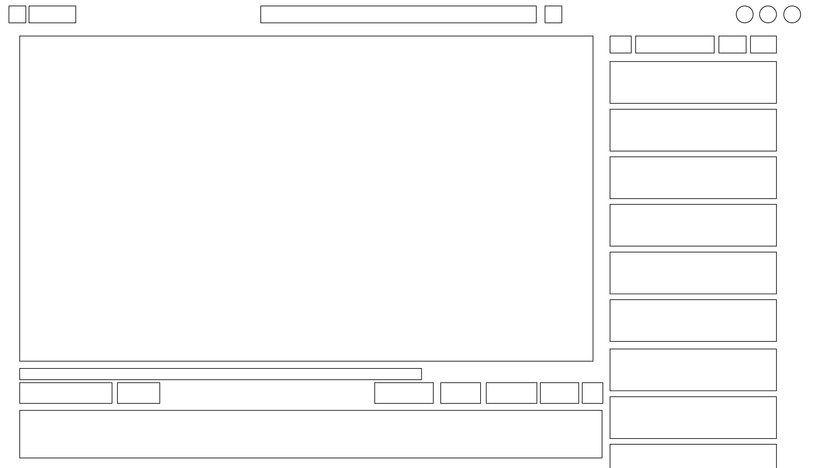
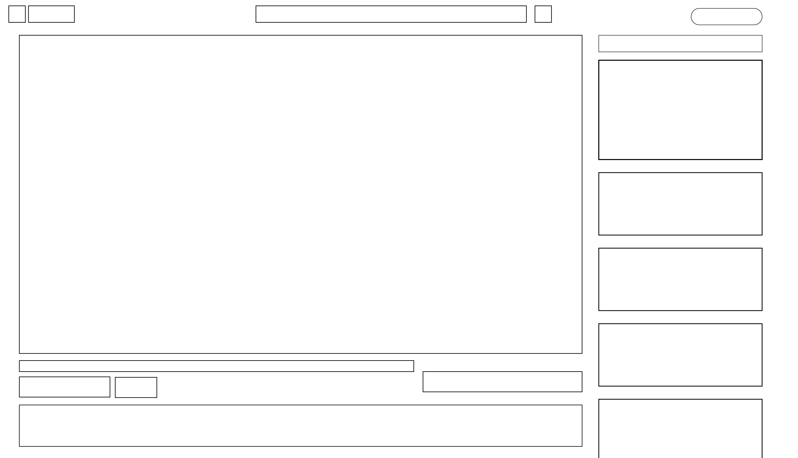

Using the favorite website you chose in homework 1, create a wireframe for one page of it using pen/paper, PowerPoint, or any your tool of choice. (use the 'img' tag!) Make sure to let us know what the name of your website is (Use the 'p' tag!)
YouTube.com

Try to improve the website you've chosen, and create a redesigned wireframe of one page for the same website using the principles of visual hierarchy that you learned from the article.

What is the goal of the website? Who is it intended for? How does the design accomplish this? Write 2-3 sentences answering these questions. (Use the 'p' tag again!)
The goal of the website is to allow people to watch & post videos online. It's intended for virtually everyone but, by nature, people who have access to the internet & like watching videos. The design allows users to watch their main video in a bigger screen while getting recommended other videos to watch as well, making the browsing/exploring process much easier.
Write 2-3 sentences about what problems your redesign addressed, and how it solved them.
My redesign made it a bit less crowded in general. Since the YouTube recommendation only plays one video as the "Watch Next", I emphasized the video that will autoplay next by making it bigger. In general, I simplified the wireframe so that it is easier on the eyes & hopefully easier to access things.
NOTE: Make sure to include the wireframe images in the website and don't just put it in your assets folder!
Your wireframes should look something like this: